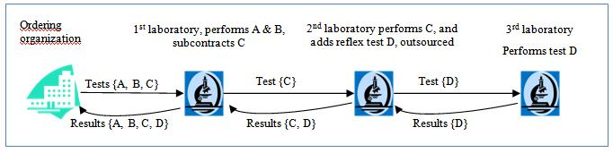
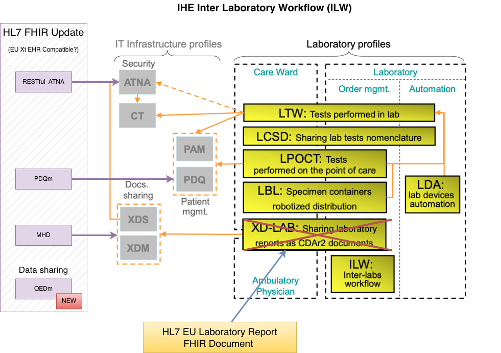

NHS North West Genomics
0.2.2 - ci-build

NHS North West Genomics
0.2.2 - ci-build

NHS North West Genomics, published by NHS North West Genomics. This guide is not an authorized publication; it is the continuous build for version 0.2.2 built by the FHIR (HL7® FHIR® Standard) CI Build. This version is based on the current content of https://github.com/nw-gmsa/nw-gmsa.github.com/ and changes regularly. See the Directory of published versions
| Actor | Definition |
|---|---|
| Requestor | A hospital laboratory that subcontracts a part of an Order or of an Order Group to another laboratory, e.g. Pathology or HODS. Is known in IHE TLW as Order Placer |
| Subcontractor | Receives Sub-orders, acknowledges specimen arrival and sends back results fulfilling these Sub-orders, e.g. Genomics. Is known in IHE TLW as Order Filler |
See Ref 1 for details.

IHE ILW Summary
The current IHE ILW specification relies on HL7 v2.x, HL7 v3, and IHE XDS. Several modernization paths are available, most of which focus on adopting FHIR, updating relevant IHE profiles, and shifting from Clinical Documents (HL7 CDA and FHIR Documents) to IHE QEDm for data exchange.

IHE ILW Modernistion with FHIR
See Blood Tests which includes inter-organisation workflows around laboratory testing.
Variations on the basic TLW scenario.
Order Order Placer MUST include Ordering Facility (ODS Code) if the Order Filler is outside the organisation (i.e. ICS Pathology Lab or Regional Genomics Lab). Order Filler MUST respond with a Report Identifier and the Order Identifier (if supplied in the Order) in the laboratory report.
sequenceDiagram
participant OrderPlacer as Requestor<br/>(Order Placer - Laboratory)
participant OrderFillerGenomics as Subcontractor<br/>(Order Filler - Genomics Laboratory)
OrderPlacer ->> OrderFillerGenomics: Places Laboratory Order (Order Identifier 1. Optional Visit/Spell Number A)
OrderFillerGenomics -->> OrderPlacer: Returns Laboratory Report (Report Identifier 1 & Order Identifier 1. Optional Visit/Spell Number A)
e.g. Haematology and oncology services
The specialty is responsible for sending a consolidated report to the Order Placer. For both the Pathology and Genomics Orders, the original Order Identifier SHOULD be included in the order (ServiceRequest.basedOn)
sequenceDiagram
participant OrderPlacer as Order Placer
participant OrderFillerSpecialty as Requestor<br/>(Order Filler - Specialty)
participant OrderFillerPathology as Subcontractor<br/>(Order Filler - Pathology Laboratory)
participant OrderFillerGenomics as Subcontractor<br/>(Order Filler - Genomics Laboratory)
OrderPlacer ->> OrderFillerSpecialty: Places Order (Order Identifier 1 & Visit/Spell Number A)
alt Pathology Diagnostic Testing
OrderFillerSpecialty ->> OrderFillerPathology: Places Laboratory Order (Order Identifier 2 & Visit/Spell Number A)
OrderFillerPathology -->> OrderFillerSpecialty: Returns Laboratory Report (Report Identifier 1, Order Identifier 2 & Visit/Spell Number A)
end
alt Genomic Diagnostic Testing
OrderFillerSpecialty ->> OrderFillerGenomics: Places Laboratory Order (Order Identifier 3 & Visit/Spell Number A)
OrderFillerGenomics -->> OrderFillerSpecialty: Returns Laboratory Report (Report Identifier 2 , Order Identifier 3 & Visit/Spell Number A)
end
OrderFillerSpecialty -->> OrderPlacer: Returns (Discharge/Hospital?) Report (Report Identifier 3, Order Identifier 1 & Visit/Spell Number A)
Is this around cancer? Is similar to above but both Lab and Genomics use the specimen for testing, so the genomic order is raised by the Pathology Lab.
Who has the responsibility for sending the genomic report to the Order Placer?
For the Reflex Order, the original Order Identifier SHOULD be included in the order (ServiceRequest.basedOn)
sequenceDiagram
participant OrderPlacer as Order Placer
participant OrderFillerPathology as Requestor<br/>(Order Filler - Pathology Laboratory)
participant OrderFillerGenomics as Subcontractor<br/>(Order Filler - Genomics Laboratory)
OrderPlacer ->> OrderFillerPathology: Places Order (Order Identifier 1, Visit/Spell Number A and Specimen Accession Number X)
OrderFillerPathology -->> OrderPlacer: Returns Report (Report Identifier 1, Order Identifier 1, Visit/Spell Number A and Specimen Accession Number X)
alt Reflex (Genomic) Diagnostic Testing
OrderFillerPathology ->> OrderFillerGenomics: Places Laboratory Order (Order (Filler) Identifier 2, Visit/Spell Number A and Specimen Accession Number X)
OrderFillerGenomics -->> OrderFillerPathology: Returns Laboratory Report (Report Identifier 2, Order Identifier 2, Visit/Spell Number A and Specimen Accession Number X)
end
OrderFillerPathology -->> OrderPlacer: Returns Report (Report Identifier 2, Order Identifier 1, Order Identifier 2, Visit/Spell Number A and Specimen Accession Number X)
Genomic Lab sub contracts to another Genomics Lab for testing.
For the Sub Contracted Order, the original Order Identifier SHOULD be included in the order (ServiceRequest.basedOn)
sequenceDiagram
participant OrderPlacer as Order Placer
participant OrderFillerGenomics1 as Requestor<br/>(Order Filler - Genomic Laboratory 1)
participant OrderFillerGenomics2 as Subcontractor<br/>(Order Filler - Genomic Laboratory 2)
OrderPlacer ->> OrderFillerGenomics1: Places Order (Order Identifier 1, Visit/Spell Number A and Specimen Accession Number X)
alt Sub Contracted Genomic Diagnostic Testing
OrderFillerGenomics1 ->> OrderFillerGenomics2: Places Laboratory Order (Order Identifier 2, Visit/Spell Number A and Specimen Accession Number X)
OrderFillerGenomics2 -->> OrderFillerGenomics1: Returns Laboratory Report (Report Identifier 2, Order Identifier 2, Visit/Spell Number A and Specimen Accession Number X)
end
OrderFillerGenomics1 -->> OrderPlacer: Returns Report (Report Identifier 1, Order Identifier 1, Visit/Spell Number A and Specimen Accession Number X)
IG © 2024+ NHS North West Genomics. Package fhir.nwgenomics.nhs.uk#0.2.2 based on FHIR 4.0.1. Generated 2026-04-10
Links: Table of Contents |
QA Report
| New Issue | Issues
Version History |
 |
Propose a change
|
Propose a change